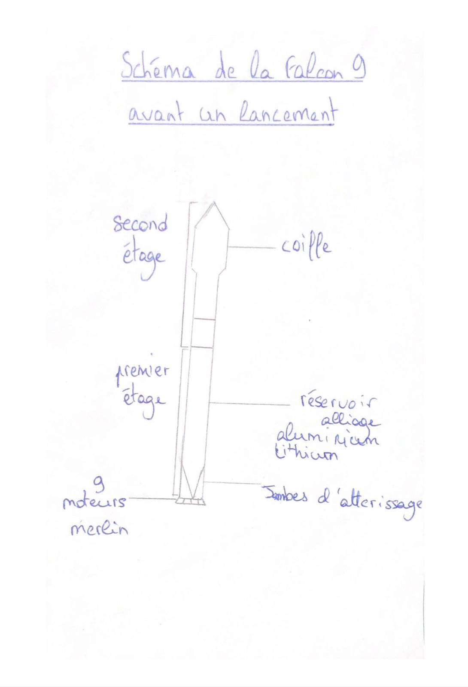

SpaceNews
La fusée réutilisable : Une révolution dans l'industrie spatiale
article écrit par CHU Kenneth, ACOU Sofia, MARTIN Elena et JOACHIM Alexandre
Introduction
Les premières recherches sur les fusées datent du 19e siècle, pourtant le premier vol de fusée a seulement eu lieu en 1947. Beaucoup d’essais ont suivi, avant d’obtenir des résultats concluants (Mercury-Redstone, Apollo 11…) Récemment, et pour des raisons écologiques et économiques, une nouvelle forme de fusée a été inaugurée par SpaceX : la fusée réutilisable. Nous allons vous parler de cette nouvelle innovation qui peut révolutionner l’univers spatial !
Cliquez sur la fusée pour découvrir la Falcon 9 !

Histoire et contexte
La fusée a beaucoup évolué durant ces dernières décennies. Si les moteurs de fusées sont aujourd'hui utilisés pour la conqueête spatiale, ces engins massifs étaient employés dans les armes nucléaires pendant la Seconde Guerre Mondiale.
La course à l'espace lors de la guerre froide entre l'URSS et les Etats-Unis a été le facteur principal du développement de lanceurs spatiaux grâce à leurs agences spatiales : la NASA (National Aeronautics and Space Administration) pour les USA et Roscosmos pour l'URSS. Désormais, l'industrie aérospatiale souhaite rendre l'espace plus accessible et moins coûteux.
De nombreuses entreprises privées se lancent dans la conception de fusées depuis le début du XXIème siècle. Elon Musk crée alors SpaceX en 2002. C'est une entreprise américaine axée dans le domaine de l’astronautique et du vol spatial. Après de nombreuses tentatives, ils réussissent à concevoir un lanceur fiable, puissant et partiellement réutilisable : la Falcon 9.
Le lanceur Falcon 9 est lancé pour la première fois en juin 2010. C’est une fusée partiellement réutilisable puisque son premier étage revient sur Terre et est utilisé pour d'autres missions. Le 21 décembre 2015, SpaceX accomplit un exploit : le premier étage atterrit parfaitement sur Terre.
Son moteur Merlin est un moteur-fusée utilisé également sur la fusée Falcon 1. Il a été créé par la même société américaine SpaceX.
Selon les statistiques de SpaceX, les lanceurs Falcon 9 ont lancé 127 satellites (exemple : Starlink) et participé à 135 missions complètes, avec seulement deux échecs. La Falcon Heavy, une version plus lourde et plus puissante de la Falcon 9 n’a effectué que trois missions jusqu’à présent, mais d’autres projets sont prévus pour l’avenir.

Mais alors, dans quel but ces lanceurs réutilisables ont-ils été conçus? Il faut savoir que la Nasa a arrêté la navette spatiale puisque celle-ci était trop chère et dangereuse. La Nasa a donc créé un programme, le Commercial Crew Development, où ils donnent de l’argent à des entreprises pour qu’elles conçoivent des fusées permettant de se rendre jusqu’à l'ISS. C’est ainsi que SpaceX envoie - environ tous les 6 mois - une équipe d’astronautes vers l’ISS. D'autres entreprises privées se sont lancées dans la conception de lanceurs réutilisables depuis le début du 21ème siècle comme Blue Origin et Virgin Galactic, dans le but de développer le tourisme spatial. La Falcon 9 permet aussi d'envoyer régulièrement des satellites en orbite à un coût réduit. Ces satellites sont essentiels pour les réseaux de télécommunications ou le GPS. Starlink, par exemple, est un réseau de satellites visant à apporter du réseau dans toute la planète.

3, 2, 1... Décollage !
Il est maintenant l’heure de découvrir comment fonctionne cette fusée ! Tout d’abord, la Falcon 9 est une fusée de 55m de haut composée de deux étages. Le premier étage comporte 9 moteurs Merlin qui fourniront la poussée nécessaire au décollage. Cette poussée résulte de la combustion de deux liquides : l’oxygène liquide et le RP-1 (Rocket Propellant 1). L’oxygène liquide est le comburant et le RP-1, une variante du kérosène, est le combustible. Ces deux ergols sont stockés dans des réservoirs en alliage d’aluminium et de lithium. Ils sont ensuite mélangés dans la chambre de combustion. Le gaz s’échappe ensuite par la tuyère, un tube en forme de cône ou de cloche tout en bas du moteur et permet la propulsion. La tuyère possède une forme qui permet d’augmenter la vitesse des gaz. Lorsqu'un gaz circule à une vitesse subsonique dans un tuyau dont le diamètre se rétrécit, sa vitesse augmente. L’oxygène liquide, aussi appelé LOX pour Liquid Oxygen, est issu du dioxygène qui est refroidi à environ -183°C. Le second étage aura un seul moteur Merlin adapté pour fonctionner dans le vide. Les deux parties de la fusée sont connectées par une jupe de liaison en aluminium carbone.
Le lancement approche : La fusée est transportée sur le pas de tir et le décompte commence. Le premier étage propulsera la fusée jusqu’à environ 70 kilomètres d’altitude. Le deuxième étage se séparera ensuite pour emmener la charge utile (satellite, astronautes…) en orbite terrestre à une altitude pouvant varier selon la mission. La fusée possède une coiffe permettant de protéger la charge utile des frottements et permettre une forme aérodynamique à la fusée. L’air ayant une densité, exerce une résistance sur la fusée qui va donc perdre de la vitesse. La coiffe de la fusée se détachera alors lorsque le deuxième étage aura quitté l’atmosphère et atteint l’espace A 100 kilomètres d'altitude, la fusée passe alors la ligne de Karman. Mettre un objet en orbite autour d’un astre nécessite une vitesse horizontale d’environ 28 000 km/h pour une orbite de 90 minutes. La fusée décolle verticalement pour sortir de l’atmosphère mais s’oriente peu à peu horizontalement pour gagner cette vitesse. Ainsi, la fusée sera si rapide qu’elle ne retombera plus sur Terre.

Pour revenir au premier étage, après cela, elle atteint son apoastre (point le plus haut de sa trajectoire) puis commence lentement sa descente vers la Terre. Il effectue une poussée contraire à sa trajectoire(qui est maintenant vers la Terre) afin de grandement ralentir lors de sa rentrée dans l’atmosphère à l’aide de 3 de ses 9 moteurs. C’est l’”entry burn”. Cela permet d’éviter la brûlure et la désintégration de la fusée dûe aux frottements. L’étage effectue une poussée “suicide” juste avant de toucher le sol pour ralentir au maximum, déployer ses jambes d’atterrissage, en nid d'abeilles d'aluminium et en fibre de carbone, et se poser sur une barge de récupération. SpaceX en possède trois comme “Of Course I Still Love You” dans l’océan Atlantique non loin des côtes américaines. Les jambes se déploient grâce à de l'hélium sous pression, 10 secondes avant l'atterrissageLors de certaines missions, le premier étage réalise un “boost back burn”, une poussée permettant à la fusée de revenir à une zone d’atterrissage terrestre.
Conclusion
Les fusées réutilisables constituent le futur de l’aérospatial. Ces lanceurs peuvent être utilisés dans tous les domaines : d'abord les missions spatiales, mais aussi pour développer le tourisme spatial comme le font déjà Blue Origin et Virgin Galactic. Cependant, la technologie des fusées réutilisables évolue constamment. Beaucoup d'améliorations sont à concevoir, comme la possibilité de réutiliser la fusée entière. Cette technologie s’inscrit dans une démarche de développement durable. Économiquement, puisque les coûts de construction et lancement sont réduits, mais aussi écologiquement car certains matériaux utilisés pour la création de ces fusées sont rares et peuvent être néfastes envers la planète. Ces lanceurs ont permis l'émergence de l'industrie spatiale privée. SpaceX envoie ainsi des satellites fréquemment, qui nous permettent les télécommunications ou même la technologie GPS (Global Positioning System).
Sources :
- Wikipédia :
https://fr.wikipedia.org/wiki/Fus%C3%A9e_(astronautique)
- Radio France : https://www.radiofrance.fr/franceinter/toutes-ces-choses-qu-on-a-envoyees-dans-l-espace-7984610
- Les Echos :
https://www.lesechos.fr/industrie-services/air-defense/2010-2019-quand-spacex-invente-la-fusee-reutilisable-1159359
- KnowHow :
https://knowhow.distrelec.com/fr/aeronautique-defense-et-marine/comment-le-lanceur-reutilisable-falcon-9-de-spacex-a-t-elle-ete-construite/
- Vikidia :
https://fr.vikidia.org/wiki/Merlin_(moteur-fus%C3%A9e)
- CapCom Espace : http://www.capcomespace.net/dossiers/espace_privee/SpaceX/falcon_9.htm
- Image 1 : https://fr.m.wikipedia.org/wiki/Fichier:Starship_passing_the_Moon-2018_version.jpg (SpaceX Flickr)
- Image 2 : https://open-organization.com/wp-content/uploads/2019/04/lanceurs-reutilisables-presans.jpg
- Image 3 : https://media.lesechos.com/api/v1/images/view/5c064c9b8fe56f369b266682/1280x720-webp/0211009349028-web.webp